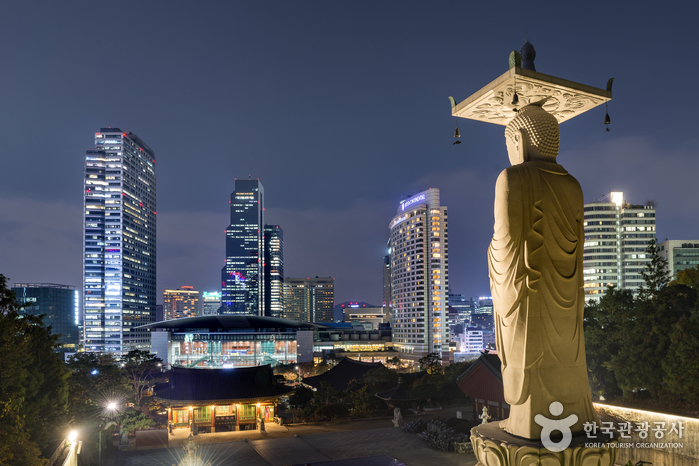

가로수길서울특별시 강남구 신사동에 위치한 거리. 현대고등학교 앞 사거리에서 신사역 동쪽 도산대로와의 삼거리까지 뻗은 도로를 이르는 말이다. ‘예술가의 거리’ 라 불리는 신사동 가로수길 주위로는 아기자기한 커피숍과 맛집, 디자이너들의 옷 매장들이 즐비해 있어 이국적인 분위기를 연출한다. 평점 5/5 |
봉은사서울특별시 강남구 봉은사로 531(삼성동)에 위치한 사찰. 대한불교조계종 직할교구 소속으로, 조계사의 말사이다. 조선시대에는 선정릉의 능침사찰이었고, 현재는 흔치 않은 도심 속의 고찰로 유명하다. 무엇보다 강남 한복판에 있어서 다른 산사들과는 달리 접근이 편리하다는 것이 장점이다. 평점 4.5/5 |
 |
COEX서울특별시 강남구 영동대로 513 (삼성동) 소재 한국 종합전시장. 글로벌 전시회와 국제회의 개최를 통한 국제교류의 장을 마련하고 글로벌 비즈니스 인프라를 두루 갖춘 최고의 전시 문화, 관광의 명소로서 아시아 마이스 비즈니스의 중심으로 자리매김 하였다. 평점 4.4/5 |
SETEC서울시 강남구 대치동에 위치하고 있는 전시장. 1999년 5월 4일 개관하였다. 전문 전시회, 박람회, 국제회의, 이벤트, 문화공연 등 다양한 수요의 전시컨벤션 개최 등을 위한 공간 연출이 가능하고, 다양한 부대시설 및 지원시설 등을 구비하고 있는 국제적 수준의 전시컨벤션센터이다. 평점 3.8/5 |
압구정토끼굴압구정로데오역 1번 출구로부터 가까운 한강으로 오가는 도보와 자전거 통행을 위한 통로. 서울 내 사실상 최대규모의 합법화된 그래피티존이다. 디자이너들의 창작물로부터 많은 영감을 얻을 수 있다. 평점 4.3/5 |
 |
미라이서울특별시 강남구 논현로153길 24 끌레르빌 1F 추천메뉴 : 사시미 평점 4.8/5 |
시라카와서울특별시 강남구 선릉로161길 7 1F 추천메뉴 : 덴푸라 10종오마카세 평점 4.8/5 |
페리지서울특별시 강남구 봉은사로68길 6-5 1F 추천메뉴 : 레이어드 라쟈냐 평점 4.8/5 |
상진식감서울특별시 강남구 도산대로11길 31-10 B1 추천메뉴 : 상진카츠 평점 4.8/5 |
맛짱조개서울특별시 강남구 언주로136길 10 추천메뉴 : 포뜬산오징어 평점 4.8/5 |